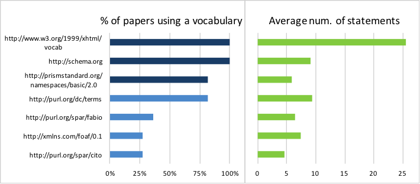
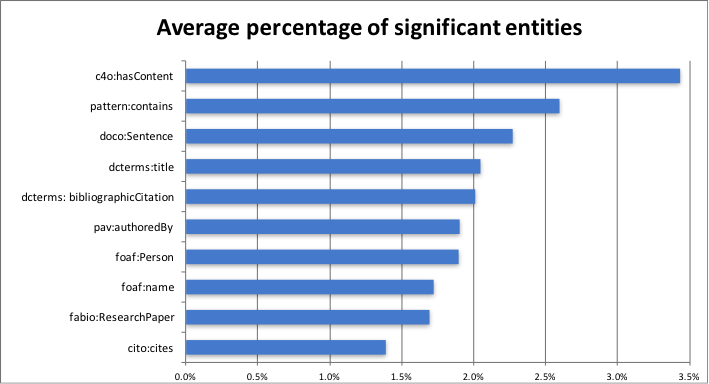

The adoption of Web-first formats in scientific literature is an important step towards the complex and exciting vision of Semantic Publishing. In a previous work we presented RASH, a simplified version of HTML that allows users to include semantic relationships in several RDF linearisations. In this paper we analyse the RDF annotations in the RASH papers submitted at SAVE-SD 2015 and 2016 to understand what kind of semantic relationships and vocabularies the authors adopted to annotate their work.
RASH version: http://bit.ly/29lmVPB
In the last ten years the Semantic Publishing community proposed a number of good practices and tools for fostering discovery, exploration and reproducibility of research publications on the Web. The adoption of HTML-based formats in academic literature is an important step towards this vision, since it opens the possibility of enriching research papers with machine-readable semantic annotations. However, in order to foster a wider adoption of these formats, we need to support the needs of all the actors involved in the production, delivery and fruition of scholarly articles, and this is still an open challenge.
Existing solutions which support HTML+RDF annotations are Dokieli (https://dokie.li/), which is an a client-side editor for decentralised article publishing based on Semantic Web technologies, and Scholarly HTML (https://w3c.github.io/scholarly-html/), a domain-specific document format built on open standards. Along these lines, in a previous work we presented the Research Articles in Simplified HTML (RASH) Framework , i.e., a set of specifications and tools for writing academic articles in RASH, that is a simplified version of HTML which allows users to include semantic relationships in RDFa, Turtle or JSON-LD.
In the last two years RASH and other HTML-based formats were adopted by the main Semantic Web conferences (ISWC, ESWC, EKAW) and by a number of related workshops and challenges such as COLD, LD4IE, LISC, MoDeST at ISWC, SemPub at ESWC, WS-REST at ICWE, and SAVE-SD at WWW. However, we still do not know much how researchers took advantage of this solution and the nature of the semantic annotations adopted for describing their work.
In this paper we present an evaluation study on the annotations associated to the RASH articles submitted to the Semantics, Analytics, Visualisation: Enhancing Scholarly Data (SAVE-SD)
workshop in the 2015-2016 period. In particular, our goal is to understand:
What are the most widely adopted vocabularies in RASH papers?
What is the composition of the average RASH paper in terms of vocabularies and entities?
The aim is assessing the current status and deriving good lessons for the future.
The Research Articles in Simplified HTML (RASH) format is a markup language that restricts the use of HTML to 32 elements. It allows authors to include semantic relationships in their work either by associating RDFa annotations or by inserting plain Turtle, RDF/XML or JSON-LD content in a script element.
RASH is the building block of the RASH Framework (https://github.com/essepuntato/rash), i.e., a set of specifications and tools for the visualisation, conversion, and enrichment of RASH documents. In particular, the Framework makes available a series of CSS3 stylesheets and Javascript scripts for visualizing RASH documents in modern browsers, and allow users to change the layout dynamically. In addition, the Framework includes the RASH Online Conversion Service (ROCS) , i.e., a Web application that allows the conversion of ODT documents into RASH and from RASH into LaTeX according to Springer Nature LNCS and ACM ICPS layouts. Finally, the RASH Framework also contains the SPAR Xtractor suite, a Java application that automatically enriches a RASH document with RDFa annotations defining its structure in terms of the Document Component Ontology (DoCO) . This tool allows the identification of each sentence in the paper and can be used to support a number of techniques to extract information from scientific articles.
In this study we focused on a sample of 1751 semantic annotations obtained from 11 RASH papers submitted to SAVE-SD 2015 and SAVE-SD 2016. The number of statements in a single paper was found to range from 24 to 903, yielding a median value of 46 (25th percentile 34, 75th percentile 175). We extracted all the RDF statements by running the W3C RDFa 1.1 Distiller service (https://www.w3.org/2012/pyRdfa/) on each article. We then considered only the statements that used http-based entities as predicates, or their objects if used for typing resources. The data are organised in several CSV files and have been obtained by running a Python script we developed for gathering the data used in this evaluation. All the material used has been made available online with open licenses and it is accompanied by explanatory README files.
The first goal of the study was to determine the prevalent vocabularies and how much they were used in the average paper. The left panel of shows the common vocabularies. Schema.org and PRISM are actually enforced by RASH: the first is used for standard metadata such as emails, affiliations and organization names and the second for keywords. In addition, a quantity of XHTML statements was automatically extracted when processing DPUB roles (https://www.w3.org/TR/dpub-aria-1.0/). Thus we will not consider such vocabularies in the rest of the evaluation. The other common vocabularies are Dublin Core, which appear in 82% of the papers, FOAF (27%) and the SPAR ontologies , such as FABIO (36%) and CITO (27%). The right panel of Figure 1 illustrates the average number of statement for each of these vocabularies. Dublin Core characterizes the highest number of annotation (9.4), followed by FOAF (7.36) and FABIO (6.4).


We also performed a more fine-grained analysis considering the amount of entities of these vocabularies within the various RDF statements. The goal was to understand the percentage of contribution that the various entities provide (on average) to the statements of the document analysed. As expected, the entities that contribute to about 60% of the statements are either those that are obliged by RASH (prism:keyword 6.9%, schema:affiliation 5.7%, schema:name 5.3%, and schema:email 4.7%) or those automatically extracted by processing the DPUB roles included, mandatorily, in the documents (xhtml:role 38%). Excluding these, the following top ten entities, shown in , cover about 20% of the statements.
Among these entities, we have three classes describing three diverse but interlinked kinds of objects, i.e. people (foaf:Person) authoring a research work (fabio:ResearchPaper) and the sentences (doco:Sentence) therein contained. The other seven entities are three object properties – two of them (pav:authoredBy and pattern:contains) provide the links between the three aforementioned classes, while the other, i.e., cito:cites, describes citation links between papers – and four data properties – used for providing additional metadata about the entities (dcterms:title, dcterms:bibliographicCitation, foaf:name) and for describing bunches of textual content of the sentences (c4o:hasContent).
We presented a study on the use of semantic annotations in RASH papers submitted to the SAVE-SD workshop during the 2015-2016 period. The analysis highlighted that, the users spontaneously decided to adopt few well-known standard vocabularies, rather than using a multiplicity of different solutions. The most used vocabularies other than Schema.org and PRISM, which are enforced by default in RASH, are Dublin Core, FOAF, and the SPAR ontologies. However, the outcomes of our evaluation generally show a quite low number of statements specified by the authors. This behaviour could derive from the lack of appropriate support for the annotation of RASH papers with RDF data. In addition, this low number seems not to be related to the research community the authors work in. For instance, several of the papers written by Semantic Web experts do not include any RDF statement in addition to those annotations that are enforced by RASH.
These results will be used in our future work to develop interactive and semi-automatic tools for supporting all the authors, from less technical-savvy users to Semantic Web experts, in annotating RASH papers. We also plan to expand our study by analysing a large dataset of HTML-based papers published in a variety of academic venues.
Shotton, D.: Semantic publishing: the coming revolution in scientific journal publishing. Learned Publishing, 22(2), 85-94. (2009)
Di Iorio, A., Nuzzolese, A.G., Osborne, F., Peroni, S., Poggi, F., Smith, M., Vitali, F., Zhao, J.: The RASH Framework: enabling HTML+ RDF submissions in scholarly venues. Proceedings of the ISWC 2015 Posters & Demonstrations. (2015)
Di Iorio, A., Gonzalez-Beltran, A., Osborne, F., Peroni, S., Poggi, F., Vitali, F.: It ROCS!: The RASH Online Conversion Service. In Proceedings of the 25th International Conference Companion on World Wide Web (pp. 25-26). (2016)
Constantin, A., Peroni, S., Pettifer, S., Shotton, D., Vitali, F.: The Document Components Ontology (DoCO). Semantic Web, 7(2), 167-181. (2016)
Osborne, F., Peroni, S.: Evaluation material and outcomes of the analysis of RDF annotations in the RASH papers. figshare. (2016) https://dx.doi.org/10.6084/m9.figshare.3474029
Peroni, S.: The Semantic Publishing and Referencing Ontologies. In Semantic Web Technologies and Legal Scholarly Publishing (pp. 121-193). (2014)